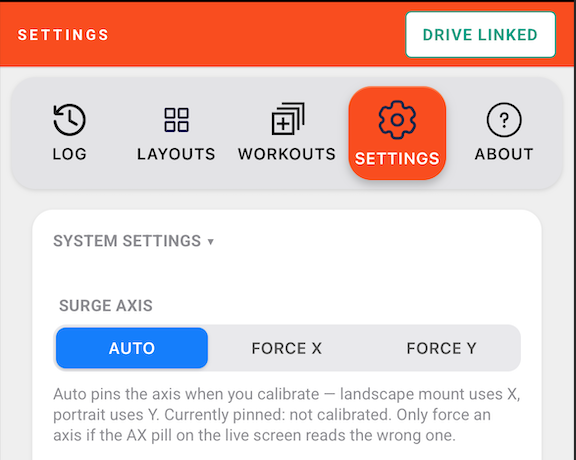
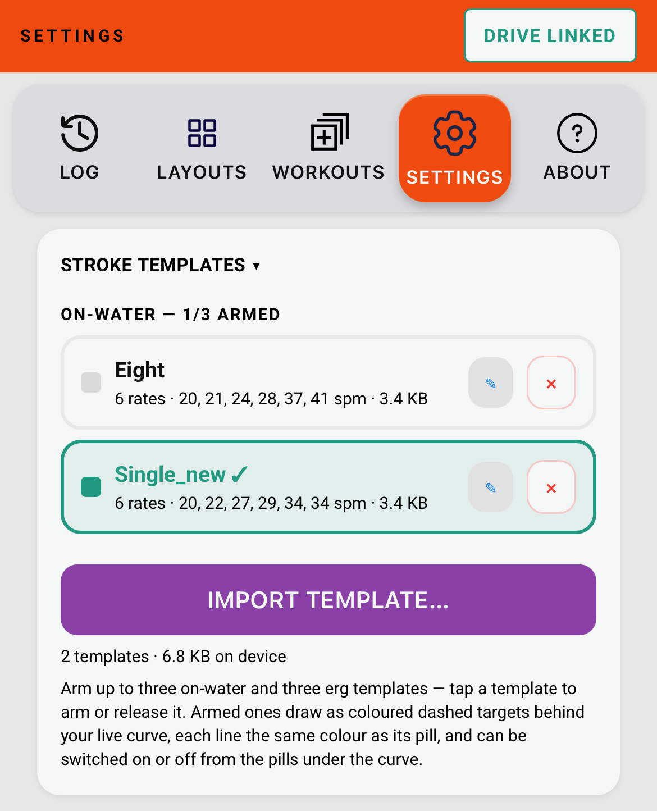
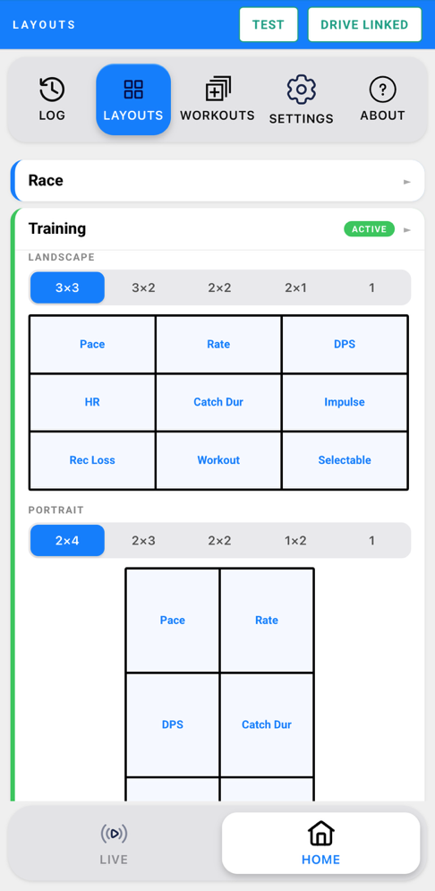
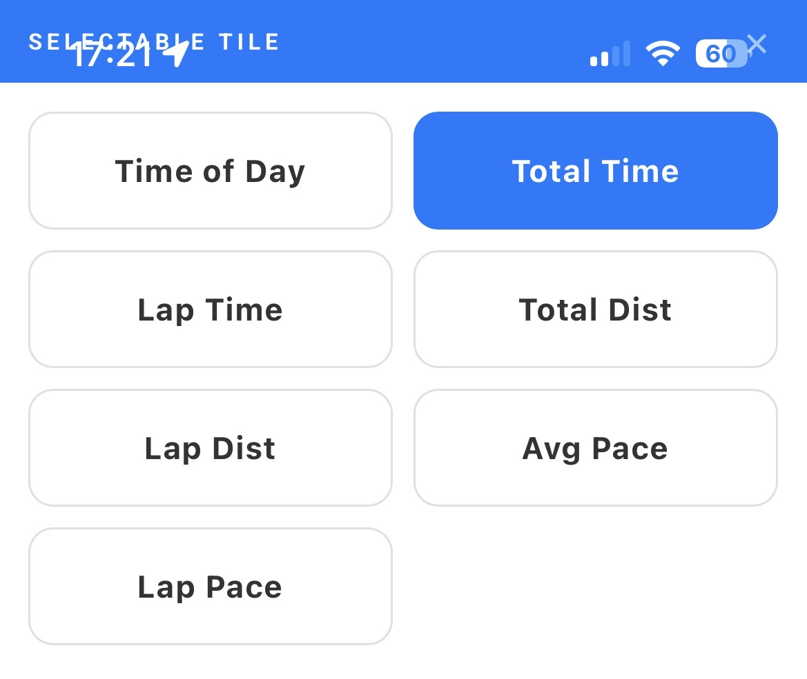

BoatRun - User Guide
One native app for rowing, coxing, coaching and erging. Two web tools for afterwards.
| What it is | Where you use it | |
|---|---|---|
| BoatRun | The app. Row, Cox, Coach and Erg modes in one. | iPhone or Android phone, in the boat, in the coach launch or on the erg |
| Analyser | Post-session analysis, training calendar, and drawing sectors, lanes and hazards, in a browser | PC (best) or tablet |
| Viewer | Live spectator map | Any browser, any device |
BoatRun is downloaded from the App Store on iPhone or Google Play on Android. Both versions are the same app with the same features. Analyser and Viewer stay as web pages you just bookmark, on any device.
Contents
- Getting started
- Mounting the phone
- Roles, Simple and Advanced
- Signing in
- Basic, Pro and Coach
- Recording a session
- Power management
- Heart rate monitor
- Layouts and tiles
- Workouts
- Calendar and planning
- Sectors and courses
- Lanes, dividers and hazards
- Erg mode
- Connect to coach
- Coach mode
- Demo modes
- Session log and exports
- Your data and storage
- Settings reference
- Analyser
- Viewer
- Metrics reference
- Limitations and warnings
- Troubleshooting
1. Getting started
New to BoatRun? Start with the Quick Start. It walks you through installing the app, signing in, and recording your first session, for whichever role you are - Row, Cox, Erg or Coach. About five minutes, no settings to change.
This guide is the full reference. The tables below are the parts worth reading on your first day out.
The pre-start chips NEW
Before you press Start, the top of the LIVE screen shows a row of chips. Each one is a thing you might want connected before you push off. Tap a chip to set it up.

| ♥ HR | Connect your heart rate strap. |
| SQUAD | Connect to your coach's squad code. |
| WORKOUT | Load a saved workout, or build a quick one. |
| SQUAD WKT | Erg only, Coach plan only - push a workout to the whole squad. |
| VIDEO | Show the Video Sync code to your camera. See Analyser. |
| Colour | Meaning |
|---|---|
| Grey | Off. |
| Green | Connected and ready. |
| Amber | You used it last session, but it isn't ready now. |
Press Start with an amber chip and the buttons along the bottom swap to that connect button plus Start Anyway, so nothing covers your tiles. Once you start, the chips make way for the time of day, distance and workout step.
The status pills
Top left of the screen in portrait or landscape:


| GPS | Green = good fix. Orange = accuracy worse than 8m. Red = worse than 25m, pace suppressed. |
| ACC | Red means no accelerometer available - reopen the app. |
| CAL | Red until you have calibrated. |
| AX:X / AX:Y | Which axis is being used for surge. Orange = detected but not locked. Green = locked, stroke detection live. |
| SQUAD | Orange when connected but no one watching. Green when coach / spectators watching. Tap it to manage the squad link. |
| COX | Only shows in Cox role. |
| 📝 NOTE | The loaded workout has a note from whoever wrote it. Tap to read it. |
| GPS DEGRADED | The app cannot corroborate its speed reading against your position track, so pace, distance and DPS are not trustworthy at that moment. Clears itself within a few strokes once the phone has a clear view of the sky. |
| PACE HELD | A single GPS fix jumped more than 30% from your last good pace, which no boat can actually do. The app shows your last good pace instead of the spike. Clears itself within about 6 seconds. |
Top right are the power button (see Power management), the LOCKED / UNLOCKED tile lock, and the REC light while you are recording.
Common first-use problems
| Symptom | Fix |
|---|---|
| AX pill stays orange | Recalibrate with the phone in the mount and the boat still |
| CAL pill red | Restart the app and allow access to motion and orientation |
| GPS pill red | iPhone: Settings → Privacy & Security → Location Services → BoatRun → While Using, Precise Location on. Android: Settings → Apps → BoatRun → Permissions → Location → Allow while using, and turn Use precise location on |
| Nothing uploads | Tap Sign in at the top of HOME and finish both steps - sign in, then link Drive. See Signing in |
| Recording stops at 20 minutes | You're on Basic. See Basic, Pro and Coach |
| Screen goes dark mid-row | Shouldn't happen - the app holds the screen awake. If it does, check Low Power Mode (iPhone) or Battery Saver and any adaptive battery setting (Android). A black screen with numbers still showing is the power saver, not a fault - see Power management |
| Water splash changes screens | Use the LOCK button to reduce errant touch detection. You will need to unlock to press LAP, change screens or end the session. For further protection, use Guided Access on iPhone (triple-click the side button) or Screen Pinning on Android |
2. Mounting the phone

Orientation

Portrait or landscape both work. What matters is that the phone is flat, screen up, facing the stern (toward the rower), and rigidly attached to the hull. The newer phones (iPhone 15 and newer, and most recent flagship Android handsets) have dual-band GPS which is significantly better at tracking. Due to the reflection of signal from water, carbon fibre and metal components, placing a rubber foam mat under the mount increases performance, particularly on older phones.
- Portrait - the app uses the Y axis for surge
- Landscape - the app uses the X axis for surge
Calibration works out which one you're using and pins it. You don't have to tell it anything. If the calibration fixes to the wrong axis, you can force a flip to another axis in system settings instead of keeping AUTO mode.
In landscape, if the phone is turned the wrong way round the app shows ⚠ FLIP PHONE 180° across the top. Turn it round.
Tilt
Flat is best. The app measures your mount angle during calibration and compensates for it, but the compensation gets less reliable the further you go.
- 0–10° - no meaningful loss of accuracy
- 10–30° - works, accuracy degrades gradually
- Over 30° - not supported; the surge signal gets mixed with heave and metrics become unreliable
If the app detects that your current tilt is more than 8° different from your saved calibration, it will offer to recalibrate before you start. Take the offer - it takes 8 seconds.
Cox mode

In Cox role the phone is facing the bow instead of the stern. If you fail to select cox mode, the primary indicator will be unusual stroke curves as shown here.
Position in the boat
Closest to the rigger gives the strongest stroke signal. Anywhere rigid is workable. What ruins it is a mount that flexes or rocks - any movement between phone and hull corrupts every accelerometer metric, and a mount that wobbles near stroke frequency will corrupt stroke ratio and Stroke Char specifically.
Recalibrate whenever you move the phone, change its angle, or switch boats.
3. Roles, Simple and Advanced
One app, four modes. Picked on the launch screen, changeable in HOME → SETTINGS → ROLE.
| Role | Tab bar | What it does |
|---|---|---|
| ROW | LIVE · CURVE · MAP · INTERVALS · HOME | Full recording, all metrics, stroke curve |
| COX | LIVE · CURVE · MAP · INTERVALS · HOME | Same as Row, with the accelerometer sign flipped for a bow-facing cox |
| COACH | COACH · SQUAD · INTERVALS · HOME | Live squad map and rower tiles. No recording of your own. |
| ERG | ERG · CURVE · SQUAD · INTERVALS · HOME | Reads a Concept2 PM5 over Bluetooth. No GPS, no accelerometer - every figure comes from the erg. See Erg mode. |
You cannot change role while a recording is running - stop first.
Row, Cox and Erg all broadcast to a squad if connected. Coach mode receives.
The MAP tab shows your own boat, your squad if you're connected, and any sectors, lanes and hazards you have switched on. The SQUAD tab only appears in Erg role, and only once you have actually joined a squad.
Simple and Advanced NEW
New users can pick SIMPLE, a stripped-back version of the app. ADVANCED is the full app described in the rest of this guide.
- Simple - a plain live screen with Pace, Rate, DPS and HR tiles, plus selectable tiles (time of day and average pace by default). The curve tab keeps fixed tiles. No templates, no LAYOUTS or WORKOUTS tabs, no MAP, INTERVALS or SQUAD tabs. Only the HR chip and Start. On the erg, Simple adds Load Workout and Connect Erg.
- Advanced - everything.
Switch between them at any time in Settings. Coach role always uses Advanced. Your recorded data is identical in both.
Plan level NEW
HOME → SETTINGS → ACCOUNT & PLAN has a BASIC / PRO / COACH picker. It sets which plan the app behaves as.
- During the free trial every level is open - pick any one to see exactly how the app looks on that plan before you choose what to buy.
- After the trial you can step down to a lower level at any time, but never above what you pay for. A coach who wants the simpler rower screens can step down to PRO without cancelling anything.
4. Signing in NEW
Signing in is now built into the app as two short steps, and the app walks you through both. Tap Sign in at the top right of HOME (or the SIGN IN · STEP 1 OF 2 button on the launch screen).

- Step 1 - your BoatRun account. Continue with Apple or Continue with Google. This is who you are. It carries your plan between your phone, a new phone and the Analyser, and anchors your free trial so reinstalling doesn't restart it.
- Step 2 - link Google Drive. Offered straight after step 1, and the button then reads LINK DRIVE · STEP 2 OF 2 until it's done. This is where your files go - a private, hidden folder in your own Google Drive.
When both are done the button shows Drive as linked. Tap it again to open Account & Plan.
Why both
- Without the account a subscription bought on your phone stays on that phone, and the Analyser won't recognise it.
- Without Drive sessions live only on the phone. There is no backup, nothing comes back on a new phone, and the Analyser has nothing to open.
Your Google Drive folder
- Every finished session uploads there automatically
- The folder is hidden - it does not appear in your normal Drive file list, and no one can read it except you
- The Analyser is the only other thing that can manage that folder, once you sign in there with the same account and link the same Drive
- Sign in on a new phone and your sessions come back by themselves - there is no separate restore step any more
Apple and Google
Signing in with Google and with Apple separately creates two different accounts, because your Apple ID and Google account almost certainly use different email addresses. Use the same one on every device. Once signed in, Account & Plan offers Link Apple account or Link Google account - one tap, and it's a spare key to the same account. (Apple sign-in isn't offered on Android.)
Strava and Concept2
Strava is linked separately in SETTINGS → STRAVA SYNC (Pro). It is not needed for anything else.
5. Basic, Pro and Coach
Free trial
Every new install gets 30 days of everything - Pro and Coach, granted by the app. No card, nothing to cancel. The launch screen counts down the days. Sign in and the start date is kept with your account, so reinstalling the app doesn't restart it.
When it expires, you drop to Basic. Nothing is deleted and nothing is locked away - all your recorded sessions, exports and raw data stay fully accessible.
What Basic gives you
- Pace, Stroke Rate, DPS and Heart Rate tiles
- All the selectable-tile fields (time of day, elapsed, lap time, distances, average and lap pace)
- 20 minute recording limit per session - you get a warning with 2 minutes left, then the session finishes and saves itself
- Full session log and calendar of what you've rowed, full Drive backup
- Every export - JSON, CSV, TCX and FIT - always free
- Join a squad with a code
- Analyser: single-session analysis, always free
- Viewer: always free, always full
Raw data is never held hostage. If you recorded it, you can export it.
What Pro adds
Pro lifts the recording cap and unlocks every stroke metric, the live stroke acceleration curve on the water and on the erg, ideal stroke template overlays, custom workouts and planning them on your calendar, sectors and courses with live PB racing, lanes, dividers and hazard warnings including club lines, squad erg mode with the live race track, and automatic Strava sync.
On the same account it also unlocks the Analyser properly: multi-session comparison, the video overlay, opening a whole squad at once, and the full stroke template workflow.
What Coach adds
Coach is for anyone running a crew or a squad. Coach includes Pro, so you don't buy both. It adds:
- Create squad codes - name the squad, share it by QR, optionally with a password
- Live squad map - every connected rower as a labelled dot, with your sectors, lanes and hazards drawn on it
- Rower tiles - name, big rate, big pace, plus whichever metrics you choose
- FREE ROW / RACE switch - individual tiles, or a ranked squad race panel
- Rower detail on tap - full metrics, live curve, mini map, lap and video for that rower
- REQUEST CURVE and the STROKE CURVES view - several rowers' live curves side by side
- LAP ALL BOATS - start an interval on every boat at once
- Create and push workouts to the squad, on the water or the erg
- Squad training calendar - plan the squad's week; rowers who follow the squad get it in their own calendar
- Squad erg races with readiness count and a synchronised start
- Push a stroke template to the squad mid-session
- In-app video tagged to the rower and moment
- Collate and export every rower's session
Rowers do not need Coach. One Coach subscription covers the whole squad - they join free with the code.
The three levels side by side
| Basic | Pro | Coach | |
|---|---|---|---|
| Price | Free | Subscription | Subscription |
| Recording length | 20 min | Unlimited | Unlimited |
| Pace, Rate, DPS, HR, selectable tiles | ✓ | ✓ | ✓ |
| All stroke metrics (catch, impulse, accel, ratio, Char, efficiency) | - | ✓ | ✓ |
| Live stroke curve, water and erg | - | ✓ | ✓ |
| Stroke template overlays | - | ✓ | ✓ |
| Custom workouts, water and erg | - | ✓ | ✓ |
| Calendar of completed sessions | ✓ | ✓ | ✓ |
| Plan workouts on your calendar, follow a squad plan | - | ✓ | ✓ |
| Sectors, courses and live PB racing | - | ✓ | ✓ |
| Lanes, dividers, hazard warnings, club lines | - | ✓ | ✓ |
| Squad erg mode - join a race | - | ✓ | ✓ |
| Squad erg mode - set up races | - | - | ✓ |
| Strava auto-sync | - | ✓ | ✓ |
| Analyser: single-session analysis | ✓ | ✓ | ✓ |
| Analyser: multi-session comparison, video overlay, templates, whole squad | - | ✓ | ✓ |
| COACH role - live squad map, tiles, detail, lap all, curves | demo only | demo only | ✓ |
| Create and push workouts and templates to the squad | - | - | ✓ |
| Squad training calendar | - | - | ✓ |
| In-app video tagged to a rower | - | - | ✓ |
| Create squad codes, passwords, QR | - | - | ✓ |
| Join a squad with a code | ✓ | ✓ | ✓ |
| All exports (JSON / TCX / FIT / CSV) | ✓ | ✓ | ✓ |
| Drive backup | ✓ | ✓ | ✓ |
| Viewer | ✓ | ✓ | ✓ |
One subscription covers the app and the Analyser on the same account. Monthly or yearly. Buy it from Account & Plan → GET PRO or GET COACH. Club and school seats can also be bought in bulk at Club Packs and redeemed with a code; a club seat shows its expiry date in Account & Plan.
Locked tiles show PRO - Upgrade to unlock rather than disappearing, so you can see what you're missing.
6. Recording a session
The LIVE tab
Your main display of selectable metrics. Every tile can be changed right here - tap a tile while the tile lock reads UNLOCKED, or hold it while recording. The LAYOUTS tab is where you set up whole grids.

The CURVE tab (Pro)
The acceleration curve for one full stroke, catch to catch. Last stroke in blue, 5-stroke rolling average in orange. Green fill above zero acceleration, red below.
Three figures sit on the curve itself, each a 5-stroke rolling median:
- Drive Accel, top left - the highest point of the curve, peak acceleration during the drive
- Recovery Accel, top right - peak acceleration during the recovery
- Catch Accel, a third of the way in from the left, bottom of the curve - peak deceleration at the catch. This one reads negative
Four tiles underneath. Tap each one to choose its metric.

Stroke templates on the live curve (Pro)
A template is a target stroke shape built in the Analyser - see Analyser. On the phone it is drawn as a dashed line behind your live curve, continuously re-timed to whatever rate you are actually rowing.

Getting templates onto the phone
HOME → SETTINGS → STROKE TEMPLATES → IMPORT TEMPLATE…. Pick the JSON file the Analyser exported. Re-importing a file you already have replaces it. The list is split into ON-WATER and ERG, each headed with how many are armed. Rename with ✎, delete with ×. Templates live on the phone only.

Arming and showing them
Three on-water slots and three erg slots, kept separately. Arm a template by tapping its row in Settings, or with the TEMPLATES button at the top of the curve. Each armed template gets a coloured pill in the corner of the curve - tap to draw it, tap again to hide it. Only the matching kind is ever shown: on-water templates on the Row and Cox curve, erg force templates on the Erg curve.
Templates from your coach
If you are connected to a squad, your coach can push a template to your phone. It arrives as a pill labelled COACH. Tap it off if you don't want it - your coach sees that you've hidden it.
Templates are boat-class specific. A single scull template means nothing in a quad or an eight.
The MAP tab NEW
A full-screen map of where you are. It turns to match your heading, shows your squad if you're connected, and draws your sectors, lanes, dividers and hazards. The lane readout (see Lanes, dividers and hazards) works on every tab, not only this one.
The INTERVALS tab
The step sequence and per-interval metrics as you complete them. WORK ONLY hides warmup, rest and cooldown rows.

Starting - when the clock actually begins
Pressing START puts the app in a ready state rather than starting the clock, so time spent tied up or backing down doesn't land in your session. Three things release it, whichever happens first:
- You move. About 20 metres from where you pressed START.
- You pick up speed. Two GPS readings above walking pace.
- You take two strokes. The quickest path, and the only one that backdates the clock by a couple of seconds so the first stroke belongs to the session.
Laps
Tap LAP to mark a split. Each lap records time, distance, pace, rate and HR.
| Blue - LAP | Normal split, or advance to the next workout step. Takes effect the instant you press it. |
| Light blue - LAP READY | Pressing will split and arm ready mode. Offered whenever the boat is sitting still, or when the next workout step waits for rowing. |
| Light green - READY | Ready mode is armed. The lap clock is held until you start rowing. |


Ready mode
Press LAP READY while sitting at the start. The previous lap closes, the new one does not begin. The new lap starts on its own after two strokes at a real rate, backdated about 2 seconds. A single bump won't trigger it. Press the green READY button to start the lap immediately instead.
The lap summary NEW
After each lap a summary card shows the lap's time, distance, pace and rate. A green bar along the bottom counts down until it closes.
- Tap the card to close it early.
- Drag the round handle on the bar to change how long it stays up. The full bar is one minute; drop the handle where you want it and that becomes your new timeout for next time.
- Or set it in SETTINGS → LAP SUMMARY TIMEOUT, 0–60 seconds (default 6). 0 turns the summary off.
The sector result card works the same way - see Sectors and courses.
Stopping and finishing
STOP pauses, RESUME continues, FINISH ends and saves.
The app autosaves regularly. If it closes mid-session (battery, crash, anything) the recording is recovered next time you open the app.


7. Power management NEW
The button at the top right of every live and coach screen cycles through three power modes. Tap it to step to the next.

| Button | What it does |
|---|---|
| ⚡ FULL | Light screen, everything updating at full rate. Best to read in direct sun. |
| ☾ SAVER | Dark screen. On an OLED phone black pixels use almost no power, so this is a real battery saving for nothing. |
| ☾ MAX SAVER | Dark screen, and the display updates less often - tiles every 2 seconds, the curve every 5, the map every 6, the squad race once a second. |
Only the display is slowed. Sensors, stroke detection, GPS, recording, lap timing and every alert run exactly as normal in all three modes. Your recorded data is identical.
The choice is remembered. Erg keeps its own setting; Row, Cox and Coach share one.
Overheating
On iPhone, if the phone reports that it is overheating in the sun, a ⚠ PHONE OVERHEATING banner appears and counts down from 15 seconds before switching to the dark screen, which makes far less heat than white at full brightness. Tap DARK NOW to switch straight away or CANCEL to stay light. If it gets very hot, the graphs also slow down. The light screen comes back by itself once the phone cools.
Battery tips
- A squad link uses the most battery of anything. Leave it disconnected unless your coach needs you live - you can still Send to coach from the log afterwards.
- Screen brightness is the next biggest drain. Turn it down, or use SAVER.
- Start long sessions at full charge, and carry a battery pack for long mornings.
8. Heart rate monitor

BoatRun connects directly to a Bluetooth heart rate strap - Polar H10, Garmin HRM, Wahoo, anything speaking standard BLE heart rate. Connect with the ♥ HR chip before you start, or in Settings.
Connect before you press Start. The app reconnects automatically on later sessions once it knows the strap, but the first pairing should happen on dry land.
HR appears as its own tile with a zone bar, is recorded into the session, exports in TCX and FIT, and charts in both the session detail and the Analyser.
Zones are configurable - Friel/Coggan LTHR zones, percentage of max HR, or age-predicted. They sync through your Drive and show in the Analyser too.
9. Layouts and tiles
HOME → LAYOUTS (Advanced)
A layout profile stores a grid size and a metric per slot, held separately for portrait and landscape. Rotate the phone and the layout swaps automatically. On-water and erg profiles are kept separately.
Built in
| Profile | Portrait | Landscape |
|---|---|---|
| Race | 2×3 - pace, rate, catch dur, HR, workout, selectable | 2×2 - pace, rate, catch dur, workout |
| Training | 2×4 - pace, rate, DPS, catch dur, impulse, HR, workout, selectable | 3×3 - pace, rate, DPS, HR, catch dur, impulse, recovery loss, workout, selectable |
Tap a profile name to make it active. + NEW PROFILE to build your own.
Grid options - landscape: 3×3, 3×2, 2×2, 2×1, 1. Portrait: 2×4, 2×3, 2×2, 1×2, 1.
Assignable metrics
| Tile | Tier |
|---|---|
| Pace | Basic |
| Stroke Rate | Basic |
| Dist / Stroke | Basic |
| Heart Rate | Basic |
| Selectable | Basic |
| Negative Catch Slope | Pro |
| Catch Accel | Pro |
| Positive Catch Slope | Pro |
| Catch Dur | Pro |
| Drive Time | Pro |
| Impulse | Pro |
| Drive Accel | Pro |
| Recovery Accel | Pro |
| Recovery Loss | Pro |
| Vel Efficiency | Pro |
| Stroke Char | Pro |
| Stroke Ratio | Pro |
| Workout (also shows sectors) | Pro |
| - (blank) | - |

Tapping a SELECTABLE tile brings up a sub-menu of options. Each slot remembers its own setting. METRIC DEFINITIONS at the bottom of LAYOUTS explains every metric.

10. Workouts
HOME → WORKOUTS (Pro)
On-water and erg are two separate sets
Every workout belongs to one venue or the other, and you only see the set that matches what you're doing. Erg ones carry a red ERG badge. Coach mode sees both and switches with ON WATER / ERG. Drag the grip on a card to reorder your list. Workouts sync through your Drive, so the same list appears in the Analyser.
If a workout is planned for today it shows at the top of the list with a green LOAD button. Workouts copied from a squad plan carry a small yellow dot.
Built in
Race 1000m - open warmup until LAP pressed → 1000m work → open cooldown until you press STOP.
Baseline: Rate Ladder - open warmup → 4 × [1 min 24, 1 min 26, 1 min 28, 1 min 30, 4 min rest] → open cooldown. The last rest is skipped.
Erg: 6 × 500m / 3min - the erg-set default, pushed straight to the PM5.

Building your own
+ NEW WORKOUT → name it → add steps with the coloured buttons underneath.
Notes - an optional box under the name. Whatever you write (or your coach writes) shows when the workout is loaded, and stays available from the 📝 NOTE pill at the top of the live screen.
An on-water workout always opens with a WARMUP and always ends with a COOLDOWN. Erg workouts have neither.
| Step | What you set |
|---|---|
| WARMUP | Nothing. Runs until you press LAP. |
| WORK | TIME or DIST, then the value. Optional targets underneath - tap SPM and/or PACE to switch each one on, then set it. |
| REST | TIME, DIST, or LAP for an open rest that only ends when you press LAP. |
| COOLDOWN | Nothing. Runs until you press STOP. |
Every value can be nudged with − and + or typed straight in - m:ss for times, plain metres for distances. ▲▼ move a step; × deletes it.
Start - one choice for the whole workout
| AFTER 5 SEC (blue) | Press LAP at the end of the warmup and a 5-4-3-2-1 countdown starts the first work step. |
| WHEN ROWING (green) | Ready mode. The lap button offers LAP READY during the warmup, then waits on green READY until you are actually rowing. |
Repeats
Tick two or more adjacent steps and ↻ REPEATS appears. Give it a count and they become a repeat block. Tick Skip last rest if you don't want the final rest (on-water only).


Loading one from the live screen
The WORKOUT chip opens a quick builder: a straight distance, a straight time, a set of identical intervals with rest, or a list of different intervals - plus your saved workouts. Give it a name to save it, or leave the name blank to run it once. In Coach mode the button reads SEND TO SQUAD.
During the workout
The workout step and time or distance remaining show across the top of the live screen, on the workout tile, and on your coach's screen. END beside the step stops the workout without stopping the session. A 5-second countdown with a tone comes before each work interval (have the phone volume up and the phone off silent), and a lap summary appears at the end of each one.


Target colours and beeps NEW
In a work step with a rate or pace target, the Rate and Pace tiles turn green on target, amber when close, and red when off. After 5 seconds in the red it beeps:
- Rate - short beeps. Pace - long tones.
- Two high - rate too high, or pace too fast. One low - rate too low, or pace too slow.
Turn the beeps off in SETTINGS → WORKOUT TARGET BEEPS. The colours stay.
11. Calendar and planning NEW
HOME → LOG → CALENDAR in the app, and the start page of the Analyser.

The calendar
- Every session you've rowed sits on its day - blue dots for on-water, red for erg.
- Planned workouts show alongside. Ones from a squad coach carry a yellow dot.
- Tap a day to see its sessions and its plan. Tap a session to open it.
- Tap the month name to jump to any month or year.
- Set which day your week starts in SETTINGS → CALENDAR WEEK STARTS (Monday, Sunday or Saturday). The Analyser follows the same setting.
Planning for yourself (Pro)
Pick a day ahead and add one or more of your workouts to it - in the app's calendar or, easier on a big screen, on the Analyser's calendar. The plan is shared through your Drive, so whatever you plan in one shows in the other.
On the day, when you open the app, a SUGGESTED WORKOUT card pops up with a LOAD button for each workout planned for today. Tap one to load it, or NOT NOW. It only offers on-water workouts when you're rowing and erg workouts when you're on the erg, and it never pops up mid-session.
Following a squad plan (Pro)
Your coach can plan the squad's training on a squad calendar. To get it in your own calendar:
- In the Log calendar, tap the SQUAD button.
- Pick the squad from your recent codes, or type the code.
The coach's plan, from today onwards, is copied into your calendar when the app opens and every 30 minutes after that. Days the coach changes are brought into line; your own planned workouts on those days are left alone. You don't need to be connected to the squad for this - it doesn't use the live link or its battery.
Planning for a squad (Coach)
In the Analyser, switch the calendar from Mine to Squad, enter the squad code, and plan the squad's days with your workouts. Every rower following that squad gets the update. See Analyser.
Sync to your phone calendar
SETTINGS → SYNC TO PHONE CALENDAR, then pick a calendar on the phone.
- Planned workouts become all-day events.
- Completed sessions become timed events with a link that opens the session in the Analyser.
- Pick your Google calendar and they appear in Google Calendar too. (On iPhone, if none is listed, add your Google account in the iPhone Settings app under Calendar → Accounts.)
- SYNC COMPLETED EVENTS and SYNC PLANNED EVENTS switch each half on or off. CHANGE CALENDAR moves them.
- It's one-way: BoatRun owns these events and keeps them up to date. STOP SYNCING CALENDARS removes them.
12. Sectors and courses (Pro)
A sector is a timed stretch of water between a start line and a finish line. Row through it on any session and BoatRun times you automatically, keeps your PB, and races you against it live. HOME → SECTORS.

Getting sectors
- Draw your own in the Analyser on one of your session tracks - pick a start and a finish on the line you rowed. That track becomes the sector's reference line.
- Download a course - SECTORS → COURSES lists ready-made courses from boatrun.au, by area, on a map. DOWNLOAD adds it to your sectors. The list is read live from the website, so new courses appear without an app update. Browse them on the Courses page too.
- Import a sector file someone has shared with you.
Some courses also carry the lanes, dividers and hazards for that stretch of water; downloading the course adds those to your lines as well.
Rowing a sector
- Row towards the start, heading the right way. As you approach, a pop-up asks ARM or SKIP.
- Once armed, the workout tile becomes the sector tile: metres to the start on top, your PB in the middle, the sector name at the bottom.
- Cross the start line - a trill sounds and the clock starts. The middle line now shows metres ahead or behind your PB; the top shows metres to the finish, measured along the reference line.
- Cross the finish - another trill, and the result card shows your time and how it compares.
Pre-arm - choose a sector from the list before you go. It then arms by itself every time you approach the start (no pop-up), and re-arms if you turn round behind the start line. Ideal for hands-free head racing and repeat pieces.
Sectors are never shown while a workout is running. If you wander too far off the line, stop for too long or turn back, the attempt is dropped as off-track.
Sector result timeout NEW
The result card stays up for the time set in SETTINGS → SECTOR RESULT TIMEOUT, 0–60 seconds (default 10). 0 turns it off. Tap CLOSE to close it early, or drag the handle on its countdown bar to set a new timeout, exactly like the lap summary.
Afterwards
Every attempt is kept with the sector. The Analyser lists your sector times for each session with your best, and can play two attempts back side by side on the track from the start-line crossing.
13. Lanes, dividers and hazards (Pro) NEW
Mark your river's traffic lanes, keep-clear dividers and hazards once. BoatRun draws them on your map and the coach map, shows how far you are from the nearest one, and warns you before you hit something. They are not timed. HOME → SECTORS → HAZARDS & LANES.

| Type | On the map | What it does |
|---|---|---|
| LANE | Yellow line with direction arrows | One-way, in the order you drew it. Stay on it. Alerts if you drift further off than your alert distance, or row it the wrong way. |
| DIVIDER | Dashed red line | Pass on either side, keep clear of it. Alerts if you get closer than your alert distance. |
| HAZARD | Orange triangle, or orange line | A single point (a post, a buoy) or a line (a sandbank, a weed bed). Warns when your course will pass within 5 m of it in the next 10 seconds. |
Drawing them
Tap + HAZARD, + LANE or + DIVIDER, then tap points on the map. A hazard can be one tap (a post) or several (a sandbank). Every line has:
- SHOWN / HIDDEN - switch it off without deleting it
- LANE → / DIVIDER / HAZARD - change its type
- EDIT, SHARE, DELETE
SHARE ALL sends the whole set. You can also draw and edit them in the Analyser on a big map; they sync between the two through your Drive.
On the water
Within 150 m of a line, a readout appears with an arrow pointing to the nearest line as it sits on your screen, and the distance in metres.
- ON LANE - you're on it, the right way.
- WRONG WAY - you're on a lane going against its arrows.
- Red with a yellow border - you're outside your alert distance.
Off-line alerts - while recording and moving, BoatRun beeps every 3 seconds when you're too far off a lane (three beeps if going the wrong way), or too close to a divider. Set the distance in OFF-LINE ALERT: OFF, 5, 10, 20 or 30 m (default 10).
Hazard warnings - whenever the boat is moving, if your course will pass within 5 m of a hazard in the next 10 seconds, an orange ⚠ HAZARD banner shows the distance and seconds to it with an arrow pointing at it, the phone vibrates, and four rapid high beeps sound every 2 seconds until you're clear. Hazard warnings take priority over the lane readout.
Facing the stern: the phone faces the rower, so the arrow points the way the hazard sits as you see the screen. Turn the volume up and take the phone off silent - the beeps are the warning you'll actually notice.
Club lines
Your club can publish one shared set of lanes, dividers and hazards. On the HAZARDS & LANES screen, type the club code into CLUB LINES and tap FOLLOW.
- The club's lines appear alongside your own and update automatically whenever the club changes them in the Analyser.
- Hide any single club line you don't want. REFRESH fetches the latest now; LEAVE stops following.
- Club lines are read-only on your phone - your own lines stay yours.
14. Erg mode
BoatRun talks to a Concept2 PM5 over Bluetooth. The phone is a second screen and a recorder - it is not measuring anything itself. No GPS, no accelerometer, no calibration. Every number you see comes off the monitor.

Governing principle: wherever the PM5 supplies a value, BoatRun displays it as-is. If your erg screen and phone screen disagree, that is a bug worth reporting.
Connecting
CONNECT ERG on the erg live screen, or HOME → SETTINGS → ERGOMETER (CONCEPT2 PM5) → CONNECT TO ERG.

- Wake the PM5 first - press any key or take a stroke. A sleeping monitor will not be found.
- Tap CONNECT TO ERG and pick your PM5.
- Once connected the PM5 pill turns green and the drag factor shows in the header.
Heart rate - pair the strap to the erg, not the phone
On the erg go to Menu → More Options → Utilities → Heart Rate and select your strap there. BoatRun reads heart rate through the erg, and the ♥ HR chip turns green. Once the PM5 has seen your belt, BoatRun asks the erg to re-pair it on later connects.
What is on screen
Distance follows your km/mi setting, with erg km shown to three decimals so every metre counts. DF beside the distance is the drag factor. Erg tiles are instantaneous values; cumulative and averaged figures live behind the selectable tile.

The CURVE tab on the erg
The PM5's own drive force curve, drive phase only, with the stroke characteristic (where peak force falls within the stroke). An erg template only draws over an erg curve. Force data is only requested while the CURVE tab is open, so it doesn't slow everything else.

Workouts
Load a workout with the WORKOUT chip and it is pushed onto the monitor. From then on the PM5 owns the timing. Workouts programmed on the erg itself are read back and tracked in INTERVALS.
Limitation: a new workout programmed on the erg is only picked up when the monitor has returned to its ready state.
The SQUAD tab - racing
Join a squad with the SQUAD chip. A SQUAD tab then appears. Joining a squad race needs Pro; setting one up needs Coach.

- Warm up however you like, then press menu to finish your warmup. You MUST be on MENU to receive the workout.
- Your phone shows WORKOUT LOADED.
- The coach starts everyone together with a count-in.
During the race the SQUAD tab shows a simulated track with every rower's boat, name, pace, rate and gap in metres. Tap your own name to hide yourself (you also lose sight of their gaps; the coach still sees everything). A− / A+ change the text size.
Erg data afterwards
Erg sessions save, sync and export like any other. The Analyser shows the PM5 force curves on its normal curve grid, in newtons.
15. Connect to coach
Tap the SQUAD chip on the live screen (or HOME → SETTINGS → COACH'S SQUAD CODE).


- Enter the code from your coach, tap one of your recent codes, or SCAN QR
- Enter your name
- CONNECT
The coach sees your location and name straight away, and your data once you press Start. Advanced metrics and the stroke curve are only sent if you're on Pro. Your coach can send you workouts and templates and press lap for you.
Want BoatRun to remind you? SETTINGS → ASK TO CONNECT SQUAD makes the SQUAD chip go amber when you've used it before, so Start offers to connect.
Battery: a squad link stays open all session and uses noticeably more battery, especially when your coach is watching your curve. If you don't need to be watched live, don't connect - you can Send to coach from the log afterwards. In areas without reliable phone reception (Lake Barrington, for example) the live link may not work at all; recording carries on regardless.
Following your squad's training plan is separate and doesn't need the live link - see Calendar and planning.
16. Coach mode
Set role to COACH on the launch screen or in Settings.
Coach mode needs the Coach plan (included in the free trial). Without it, tapping COACH opens the Coach upgrade instead. The COACH demo runs on canned data so you can see it first.
Setting up a squad
HOME → SETTINGS → CREATE A NEW SQUAD
- Enter a squad name (only the first 5 characters show on the rower's phone)
- Tap GENERATE for a new 7-character code
- Optionally set a password
- CREATE SQUAD
- Give the code to your rowers, or SHOW QR for them to scan. The same QR opens the Viewer for spectators.
Anyone with the code sees the squad's live positions and can open squad-sent sessions in the Analyser - use a password, or a new code each term.
The coach screen

Across the top: LAP ALL BOATS, LOAD WORKOUT, TEMPLATES, VIDEO and Connect Squad. In landscape these stack down the right edge and the tabs down the left, leaving the middle for the boats.
Map - every connected rower as a labelled dot, your own position separately, with your sectors, lanes and hazards drawn on. Tap a boat to keep the map centred on it. Drag the bar under the map to make it taller or shorter.
MAP / STROKE CURVES - switches the top strip between the map and a list of live stroke curves, one per rower you've requested, each with its rate and pace. Drag the scale bar on the right to change the curve height.
Rower tiles - name, big rate, big pace, plus whichever metrics you choose in LAYOUTS → OVERVIEW TILE METRICS. + / − scale the grid; drag a tile to reorder. DETAILED VIEW METRICS chooses what the rower detail shows.
FREE ROW and RACE NEW
The FREE ROW / RACE switch in the coach header chooses what fills the screen under the map.

| Mode | Best for | What you see |
|---|---|---|
| FREE ROW | Steady state, technical work, crews doing their own thing | One tile per rower with rate, pace and your chosen metrics, coloured by state. Tap a tile for detail. |
| RACE | Pieces, races, interval sets started together | A ranked race panel: a simulated track with every crew, ordered by who's furthest ahead, with lap distance and metres ahead or behind. Relative position resets to zero at each new interval, so you can see whether the order changes from piece to piece. Tap a name for that rower's detail. |
The map strip stays the same size in both. Use A− / A+ to change the race text size.
What each boat's colour means
One press of LAP ALL BOATS starts a boat sitting in ready mode, splits a boat that is rowing, and does nothing to a boat that is stopped. So each tile is coloured by its state:
| Their own colour - ROWING | Under way. A lap splits them. |
| Light orange - REST | In a rest interval. |
| Light blue - LAP READY | Waiting at the start with ready mode armed. A lap starts them. |
| Light green - LAPPED · READY | Your lap landed and put them into ready mode. |
| Green - LAPPED | Your lap landed while they were rowing. Holds for 5 seconds. |
| Grey - STOPPED | Paused, finished, or not moving yet. A lap does nothing. |
| Grey - NO SIGNAL | Nothing heard for 25 seconds. |
The LAP ALL BOATS button takes the colour and wording of what most of the squad is doing, with a count - LAP 4/4, LAP READY 3/4, LAPPED · READY 4/4. A first number below the second means somebody is different or has dropped off. If the squad is split, tapping asks you to confirm and names who is in which group.
Rower detail

Full metrics, live stroke curve, laps, and LAP and VIDEO buttons for that rower. ⛶ opens the curve full screen.
REQUEST CURVE asks that rower's phone to stream its stroke curve for the time set in STROKE CURVE REQUEST LENGTH (5–60 seconds).
VIDEO records a clip tagged to that rower and that moment, ready to drop onto their session in the Analyser. Set the save folder in SETTINGS → SYSTEM SETTINGS - a cloud-synced folder is best.
Coach settings
- Squad code, name and password - create, connect, show QR.
- STROKE CURVE REQUEST LENGTH - 5–60 seconds per curve request.
- Overview and detail metrics - in LAYOUTS when in Coach role.
- Video folder - in SYSTEM SETTINGS.
- Power button - Coach shares the Row/Cox power mode; the coach's phone drains fastest of all, so SAVER is worth using.
- Plan level - step down to PRO in Account & Plan for the rower screens without cancelling.
Running a squad piece on the water
Build the workout with AFTER 5 SEC for a running start, or WHEN ROWING for standing starts. LOAD WORKOUT → SEND TO SQUAD. When you want to finish the warmup and start the piece, tap LAP ALL BOATS.
With WHEN ROWING, crews must be stationary for at least 10 seconds first. Watch the button: you want LAP READY n/n - every boat stopped and armed. After your lap lands it turns LAPPED · READY n/n until they row away.
Running a squad erg race
- Rowers warm up, then all must be on the erg's main menu.
- LOAD WORKOUT - build the piece or pick a saved one.
- PUSH TO SQUAD - every connected erg is armed.
- The button becomes START - n/n LOADED, amber until all are ready.
- Tap START for a synchronised count-in.
A Coach-plan rower on an erg can do the same with the SQUAD WKT chip; their own machine arms and starts with everyone else.
The INTERVALS tab
Every connected rower's intervals as they complete them. Refreshes every 30 seconds, or tap ↻ REFRESH. × or CLEAR SHOWN only removes results from the display - nothing is deleted. They're collated into a squad session in your log; a new one starts after a 3-hour break or a change from water to erg. Open them in the Analyser under COACH SESSIONS.
Squad training calendar
Plan the squad's week on the Analyser's calendar in Squad view. See Calendar and planning.
Battery - read this
| Rower's situation | Sends every |
|---|---|
| Not rowing | 60 seconds |
| Rowing, coach not detected | 30 seconds |
| Rowing, coach online | 9 seconds |
| Coach has requested the stroke curve | 3 seconds |
| Start, stop, lap, or lap from the coach | Immediately |
Expect up to double the usual battery use for a long squad session. Start at 100%, use SAVER, carry a battery pack.
17. Demo modes

The TRY A DEMO buttons on the launch screen, or HOME → SETTINGS → ROLE → DEMO. A red END DEMO button stays in the top corner the whole time.
ROW demo - replays a real recorded session. Every tile, the curve and the metrics behave as on the water. Use it to set up your layout or check a workout.
COACH demo - a simulated squad on code BOATRUN: four rowers generating live data. The map, tiles, detail views and curve requests all work.
ERG demo - a simulated erg session with relative positions on the SQUAD tab.
- Demo sessions are never uploaded.
- Ending the demo puts you back in the role you were in.
18. Session log and exports
HOME → LOG has two views: CALENDAR (see Calendar and planning) and SESSIONS, the full list, newest first.
Filter with All, On water, Erg, Squad (coach) and ★ favourites. Tap the star on a card to make it a favourite. Each card shows Synced once the Drive copy is confirmed, or Awaiting Sync. Tap a card to open it; swipe it left to reveal DELETE.
Session detail
Summary cards, colour-coded by what affects them - green independent, blue boat-dependent, red condition-dependent. Then lap tables, workout intervals, sector results, and charts for every metric.
RENAME names the session (the Drive copy updates too). Analyser ↗ opens it in the Analyser.


Exports
| Button | What you get |
|---|---|
| Send to squad | Uploads the session to your squad so your coach can open it in the Analyser. Works after the row without a live link. |
| TCX Export | Standard training file. GPS track plus heart rate. |
| FIT Export (Recommended) | Same destinations as TCX, better fidelity. Use Chrome rather than Safari to import FIT to Garmin Connect. |
| JSON | The complete session - every stroke, every metric. The Analyser's preferred format. |
| Delete | Removes it from this phone, your Drive and every other device. Permanent. |
All exports are free on every tier. Strava - Pro users who link Strava get automatic upload after every session.
19. Your data and storage
| Where | What's there | Who can see it |
|---|---|---|
| Your phone | Every session, full detail | You |
| Your Google Drive | A copy of each session, plus your workouts, plan, sectors, lines, templates list, units and zones, in a private hidden app folder | You, and the Analyser once you sign in with the same account |
| Squad cloud (while connected) | Live rate, pace, position, and the metrics your coach has enabled | Your coach and anyone with the squad code |
| Squad cloud (Send to coach) | The full session file | Your coach and anyone with the squad code, until pruned |
| Phone calendar (if synced) | Planned workouts and completed sessions as events | Whoever can see that calendar |
| Strava (Pro, if linked) | The activity | Per your Strava privacy settings |
Backing up and getting it back CHANGED
There is no Sync with Drive button any more. Once you're signed in with Drive linked:
- Every finished session uploads by itself. If you're offline it waits and goes when you have signal.
- On a new phone, or after reinstalling, sign in and link Drive - your sessions come back on their own.
- Older sessions whose full copy has been freed off the phone (see Storage, below) are fetched from Drive when you open them.
Sessions you deleted deliberately do not come back - deleting removes the Drive copy too.
Everything lives under SETTINGS → YOUR DATA
- STORAGE… - the safe one. Reports what BoatRun is using and offers to free space without deleting anything.
- RE-PROCESS OLD SESSIONS… - recalculates metrics in older sessions with the current version of the app.
- DELETE MY DRIVE DATA - permanently deletes every BoatRun session in your Drive. Sessions on the phone are untouched.
- PRUNE SQUAD SESSIONS (Coach) - removes squad cloud records older than 21 days for your squad.
- DELETE MY ACCOUNT - permanently deletes your sign-in, plan record, squad membership and Drive sessions. You'll be asked twice. It does not cancel a store subscription - cancel that in the App Store or Google Play.
Freeing up space - STORAGE…
It first reports total use, how many sessions have their full copy on the phone, and how many of those are backed up on Drive versus only on this phone. Then it offers to remove the on-phone copy of sessions that are older than 30 days and confirmed on Drive.
Nothing is deleted. Those sessions stay in your log; open one and it downloads again (you need signal). A session that is not on Drive is never touched.
If the phone fills up anyway
BoatRun will not let full storage cost you a session. When you press FINISH it strips raw debug traces first, then frees the phone copy of already-backed-up sessions, oldest first. If there is still no room the session is held safe in an autosave slot and you're asked to free space and press Finish again - don't close the app. Unsynced sessions are never removed automatically.
Deleting a session

Deleting anywhere deletes everywhere. Swipe a card left in the log, or use the trash icon in the Analyser, and it goes from that device, your Drive and every other device. The confirmation names the session. There is no undo - the hidden app folder is not Drive's normal bin. Deleting looks instant; the Drive copy is removed in the background (or on next signal if you're offline).
Don't delete to make room. Use STORAGE… instead. Export anything you want to keep first - raw data export is free forever.
20. Settings reference
| Setting | What it does |
|---|---|
| ROLE | Row, Cox, Coach, Erg, and demos. |
| SIMPLE / ADVANCED | Stripped-back or full app. See section 3. |
| ACCOUNT & PLAN | Sign in, link Apple/Google, plan level, upgrade, restore purchases. |
| COACH'S SQUAD CODE | Connect to a squad. Coach role adds CREATE A NEW SQUAD and password. |
| ASK TO CONNECT SQUAD | Whether the SQUAD chip prompts you before Start. |
| STROKE TEMPLATES | Import, arm, rename and delete templates. |
| HEART RATE | Connect a strap, set zones. |
| ERGOMETER | Connect a PM5. |
| SYNC TO PHONE CALENDAR | Planned workouts and sessions into a phone calendar. |
| STRAVA SYNC | Link Strava for automatic upload (Pro). |
| LAP SUMMARY TIMEOUT | 0–60 s, default 6. 0 = off. |
| SECTOR RESULT TIMEOUT | 0–60 s, default 10. 0 = off. |
| WORKOUT TARGET BEEPS | On / off. |
| OFF-LINE ALERT | In HAZARDS & LANES. OFF, 5, 10, 20 or 30 m. |
| UNITS | Pace (/500m, /1km, km/h, /mile, mph), distance (km, miles), sub-units (m, ft, in). Shared with the Analyser. |
| CLOCK | AUTO follows the phone's 24-hour setting; force 12 or 24 hour if your phone doesn't pass it through. |
| CALENDAR WEEK STARTS | Monday, Sunday or Saturday. Also used by the Analyser. |
| SYSTEM SETTINGS | Surge axis (AUTO / FORCE X / FORCE Y), text size, dark screen, video folder (coach), debug data. |
| YOUR DATA | Storage, re-process, delete Drive data, prune squad, delete account. See section 19. |
21. Analyser
The Analyser is a web page. Bookmark it, open it on a desktop for preference or an iPad at a pinch. Nothing to install. It reads the same Google Drive folder the app writes to.
Signing in CHANGED

The button in the top bar walks you through the same two steps as the app: Sign in (step 1 - your BoatRun account, with the same Apple or Google you use on the phone), then Link Drive (step 2). When both are done it reads Drive linked. Your Pro or Coach plan comes with your account.
Other ways to load data: From Squad (a squad code, plus password if set) and Open file (.json, .fit, .tcx or .csv).
The start page and calendar NEW

The start page opens on a month calendar of every session, by day. Click a session to open it.
- Mine / Squad - your own calendar, or a squad's (enter the code).
- Assign workouts to days - drag or add one of your workouts to a day ahead. It appears in the app as that day's suggested workout.
- ↻ From squad - copies a squad's plan into your own calendar, the same as following it in the app.
- ↻ Sync with app - fetches new sessions, workouts and calendar items from the app now.
- 🗓 Planning ↗ - opens the planning calendar in its own window, for laying out a block of training.
- Today and the ‹ › arrows move around the months.
Workouts in the Analyser NEW
Create, edit and reorder your workouts on a big screen. They sync through Drive and appear in the app's WORKOUTS list. In Squad view, a coach builds the squad's workouts the same way.
Summary and Personal Bests

Summary - longest row and total strokes, then sessions, distance, time and average pace for all-time, a month and a week. Use ‹ › to step back.
Personal Bests - your fastest 500m, 1km, 2km, 5km, 10km, 30min and 1hour on the water and on the erg. True rolling best efforts, found anywhere within any session. Tap a PB to open the session.
Scan All for Records rebuilds the PB table. Reset Records clears it.
Loading a session
Click any session. Load more than one with + add for comparison (Pro); each gets a tab across the top.
Units bar
Pace unit, distance and DPS sub-unit. In erg files: Pace, Watts or Calories. Synced with the app.
Summary cards
Every metric as a card, colour-coded by category. Clicking a card toggles that metric on or off in the main chart. Tiles reorders and hides cards. Metrics opens the glossary.

Stroke chart

- X axis – stroke number, distance or time
- Smooth - off, or 3 to 30 strokes
- Zoom and Pan - buttons, sliders, or scroll; double-click resets
- Drag across the chart to select strokes; hover or tap for values
The overview strip above is a miniature of the whole session; drag on it to select, or drag group bands to move them.
Curve comparison

Pin up to 8 groups of strokes (multiple sessions on Pro) and their averaged acceleration curves overlay on one canvas, with the integrated speed profile underneath. Pin a group by dragging a selection then ＋ Add to curves, or by clicking a lap row. The stats table gives one column per group.
The curve shape comes from the accelerometer and is not affected by wind, tide or current, so comparing two different days is always valid.
Stroke Templates (Pro)

- Select a steady block at one rate → ＋ Add to curves. Repeat for each rate.
- Create / edit template, name it, add each group as a rate entry.
- Preview across the rate range, then Export.
On-water and erg templates never mix. Load stroke template to draw one over a curve group. Build one per boat class.
Sectors (Pro)
Draw a sector on a session's track: a start and a finish on the line you rowed (it must be within 100 m of that track). The session's sector list shows each attempt with your best, and the compare view plays two attempts back side by side on the track at 1–16× speed, timed from the start-line crossing. See Sectors and courses.
Lanes, dividers and hazards (Pro) NEW
Draw and edit your lines on a full-size map - easier than on a phone. They sync to the app through Drive.
Club lines - a club creates a club code and draws the club's lines; everyone who follows that code in the app gets them, and gets every change automatically. See Lanes, dividers and hazards.
Video overlay (Pro)

＋ Add video for individual files, or Video folder to match clips to the session by time.
- Playback with ±5s and ±0.1s stepping, fullscreen
- Sync from code reads the Video Sync code filmed at the start - the most accurate way
- Sync from chart, Auto from file, ±0.1 nudges, Save sync
- Live metrics and the stroke curve overlay onto the video; drag and resize them
- Metrics box - choose what shows; saved to your account
- Record overlay (webm) or Burn into MP4
Filming yourself - Video Sync (Pro)
On the water: start the camera, tap the VIDEO chip, hold the phone screen close to the lens for 3 seconds, tap Done, then mount, calibrate and Start. Keep the camera recording.
In the Analyser: ＋ Add video → Sync from code. If the code can't be read, step to the frame where the digits change, type that time and tap Use typed time. GoPro chapters chain automatically once one is synced.
Video format
Best: H.264 MP4. Avoid iPhone HEVC (.mov) in Chrome - convert it to H.264 MP4 first (QuickTime "Export As" or HandBrake).
Laps, map and stroke data
Click a lap row to zoom to it and select its strokes. The route map shows pinned groups in their colours, plus your sectors, lanes and hazards. The stroke table is sortable; click a row to pin a stroke.

Exporting from the Analyser
Files → Export JSON, Export TCX or Export FIT (Recommended).
22. Viewer
For spectators, parents and athletes waiting their turn. No install, no account, no cost.
- Open the Viewer link or the coach's QR
- Enter the squad code (BOATRUN for the demo)
- Enter the password if there is one
- CONNECT
A full-screen map with every rower updating live, and a strip of cards with name, rate and pace. + Add another squad watches more than one. ✕ LEAVE disconnects.

23. Metrics reference
- 🟢 Independent - compare across any session, conditions or boat. Accelerometer timing.
- 🔵 Boat dependent - compare within the same boat.
- 🔴 Condition dependent - GPS-derived. Tide, current and wind move the number.
🔴 Pace
Boat speed in your chosen unit. Suppressed when GPS accuracy is worse than 25m or the boat is barely moving. Don't compare across days on tidal water unless conditions and direction match.
🔴 Moving Pace
Pace averaged only over the periods the boat was moving. The better number for interval training.
🔴 Distance Per Stroke (DPS)
Boat travel per stroke. Typically 7–11m in a single. At equal pace, higher DPS means a lower rating; a mid-session drop at steady rate usually means fatigue.
🟢 Stroke Rate
Strokes per minute, from recent catch-to-catch intervals. Clears after a rest and returns after two new catches.
🟢 Stroke Ratio
Recovery time ÷ drive time. About 2.0–2.5 at training rates, 1.5–1.8 at race rates. If it collapses as rate climbs, you're shortening the recovery instead of quickening the drive.
🟢 Stroke Char (%)
Where peak drive acceleration falls within the drive: 0% = boat starts accelerating after the catch, 100% = blade exit. Under 40% front-loaded, 40–60% mid-drive, over 60% back-loaded. Smoothed over 5 strokes. On the erg it is where peak force falls within the stroke.
🟢 Recovery Loss
Speed lost to deceleration in the recovery, per second of recovery. Lower is better.
🔵 The catch group
- Negative Catch Slope - the gradient down into the check
- Catch Accel - the depth of the trough (reads negative)
- Positive Catch Slope - the gradient back out
- Catch Dur - the width of the trough, from 30% of its depth to back through zero
A steep Negative Slope with a shallow Catch Accel is a sharp, well-placed entry; with a deep Catch Accel it is the boat being stopped. Rising Positive Slope as rate climbs means you're adapting well. Shorter Catch Dur usually means a quicker, more connected catch.
🔵 Catch Consistency
Variation in recent Positive Catch Slope. Lower is more repeatable; it usually degrades before pace drops.
🔵 Drive Time
Peak drive acceleration to blade exit - the back half of the drive.
🔵 Impulse
Total positive acceleration through the drive (Δv). Rising at constant pace means more effort for the same result.
🔵 Drive Accel
Peak forward acceleration in the drive, m/s². Top left of the curve.
🔵 Recovery Accel
Peak forward acceleration in the recovery, after the small dip following the finish. Top right of the curve. Should rise at high ratings.
🔵 Vel Efficiency (%)
How steady the hull's speed is through the stroke. 100% = perfectly steady; 93–97% typical sculling. Higher is better.
🟢 Heart Rate
From a connected strap, with zone colouring.
24. Limitations and warnings
GPS metrics measure over the ground
Pace and DPS measure motion relative to the ground. On a tidal river a 0.3 m/s current changes displayed pace by about 10 seconds per 500m at a 2:00 baseline. The accelerometer metrics are unaffected - they are your reliable technique metrics on tidal water.
Lanes and hazards are an aid, not a lookout
Warnings depend on GPS, which can be several metres out under bridges, near buildings and trees, or on older phones. A hazard is only as accurate as where it was drawn. Keep looking around. Never rely on BoatRun to keep you clear of other boats - it doesn't know where they are.
The mount matters more than anything else
Every accelerometer metric assumes the phone is rigidly attached to the hull. A mount that rocks near stroke frequency corrupts stroke ratio and Stroke Char plausibly enough that you might believe the numbers. Recalibrate whenever you move the phone.
Axis lock after a long rest
If the AX pill stays orange after several strokes, row steadily for 20–30 strokes to let the detector relock.
Crew boats
In doubles, quads and eights the accelerometer sees all the rowers together; stroke detection follows the dominant signal. Catch Slope, Catch Accel and Impulse are not comparable with single-scull values.
No absolute force measurement
These metrics measure the hull's response to blade force, not the force itself. Never compare Catch Slope, Catch Accel, Impulse, Drive Accel or Recovery Loss across boat classes.
Cold, heat and battery
Below about 5°C the phone may throttle. In hot sun it can overheat - see Power management. Start long sessions at full charge.
Squad features need mobile data
Squad, Coach and Viewer need an active mobile connection on the water. Recording is entirely local and continues regardless.
Protecting your data
- Sign in and link Drive, and check for the Synced badge
- Export JSON after a significant session
- Tap Finish rather than force-closing the app
25. Troubleshooting
Stroke detection not triggering Recalibrate with the phone in the mount and the boat still. If the AX pill stays orange for more than a minute, check the mount is rigid and flat.
AX pill shows the wrong axis Settings → SYSTEM SETTINGS → SURGE AXIS → FORCE X or FORCE Y. Only if AUTO is genuinely wrong - check the stroke curve.
Pace high, or dropping out GPS accuracy must be better than 25m. On tidal water pace is over-ground speed.
Recording stopped at 20 minutes Basic limit. Upgrade to Pro.
Tiles say PRO - Upgrade to unlock That metric is Pro-only - or your plan level is stepped down in Account & Plan.
Coach screens keep showing the upgrade Check the plan level in Account & Plan isn't set below COACH.
Sessions not uploading Tap Sign in at the top of HOME and finish both steps. Pending sessions upload automatically when signal returns. Export JSON as a backup if it keeps failing.
Sessions missing on a new phone Sign in with the same Apple or Google account and link the same Drive. Signing in with the other provider creates a different account.
Phone says storage is full SETTINGS → YOUR DATA → STORAGE…. Nothing is deleted.
A session opens slowly, or says it needs signal Its full copy was freed off the phone and is being fetched from Drive.
Deleted a session and want it back You can't. Deleting removes it everywhere.
No suggested workout today It only appears once per day, never mid-session, and only for workouts matching your venue (water or erg). Check the day in the Log calendar.
Squad plan not appearing Make sure you've picked the squad with the SQUAD button in the Log calendar, and that the squad isn't password-protected without you entering the password.
Phone calendar events not appearing Check SYNC TO PHONE CALENDAR is on and points at a calendar the phone syncs. Allow BoatRun calendar access in the phone's settings.
No sector pop-up You must approach the start heading the right way, with no workout running. Pre-arm it to skip the pop-up.
No lane readout Lines only show on Pro, when SHOWN, and within 150 m. Alerts only beep while recording and moving.
Hazard beeps can't be heard Turn the volume up and the phone off silent.
Screen went black but numbers still show That's SAVER or the overheating guard. Tap the power button for ⚡ FULL.
HR strap won't connect Wet the contacts, put it on before connecting, and make sure no watch has already claimed it.
No rowers appearing in Coach Every phone needs mobile data. Confirm the squad code matches exactly.
Rower tiles going grey No recent data. Intermittent grey under bridges is normal.
Battery draining fast Probably connected to a squad. Use SAVER and see Power management.
Android: recording stops when the screen is off Settings → Apps → BoatRun → Battery → Unrestricted. Samsung: also remove BoatRun from Sleeping apps.
Android: HR strap won't pair Allow Nearby devices permission, and turn Location on.
Analyser chart looks empty Click a summary card to bring a metric back, or double-click the chart to reset zoom.
No Personal Bests showing Run Scan All for Records.
Strava upload not appearing Pro only, and Strava must be linked. For a manual upload, export FIT and add it as a Rowing activity.
Found a bug or have an idea? Email bigwig.91mash@icloud.com.